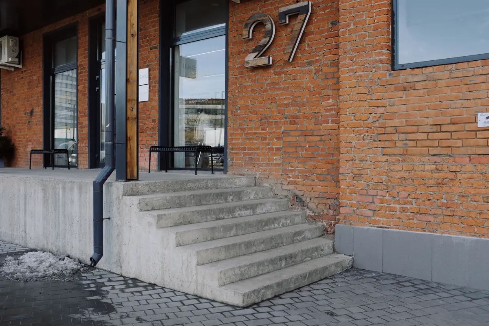
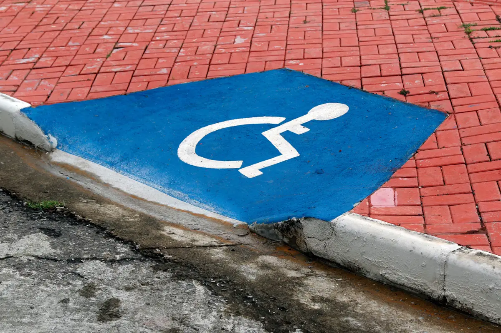

Acessibilidade em Vila Velha: o que costuma travar
Vila Velha mistura dois tipos de imóvel que dão trabalho: o comércio de rua nos polos da Glória, da Av. Champagnat, do Centro e da Av. Jerônimo Monteiro, com degrau na porta e loja estreita; e os prédios da orla na Praia da Costa, Itapuã e Itaparica, muitos construídos antes das regras atuais, com escadas entre a calçada e o hall. A esses se somam os lançamentos recentes, que já nascem acessíveis no papel mas nem sempre na obra entregue.
Pela Lei 13.146/2015, o alvará de funcionamento depende do cumprimento das regras de acessibilidade — por isso o tema aparece justamente na abertura ou na renovação. O laudo para alvará detalha esse caminho; esta página reúne o que é específico da cidade.
Equipe técnica pronta para atender toda a demanda em Vitória, Vila Velha, Serra, Cariacica e região: o orçamento, o agendamento e o acompanhamento ficam centralizados na Axial Engenharia, do primeiro contato à entrega do documento.

Onde mais aparece
| Tipo de imóvel | Problema típico | Página |
|---|---|---|
| Loja de rua (Glória, Champagnat, Centro) | Degrau na porta, provador e sanitário sem medida | Alvará |
| Condomínio na orla | Escadas entre calçada e hall, garagem sem rota | Condomínio |
| Clínica em sala comercial | Rota do prédio, sanitário do andar | Clínica |
| Escola e creche | Pavimento superior sem elevador, pátio com degraus | Escola |
| Igreja e templo | Escadaria, nave sem espaço reservado | Igreja |
| Hotel e pousada | Quarto e banheiro acessíveis | Hotel |

Calçada, vaga e entrada: a rota começa na rua
A rota acessível começa na calçada. Em muitas ruas de Vila Velha, o desnível entre a calçada e a porta é resolvido com um degrau improvisado ou uma rampa fora de inclinação. O laudo mede cada trecho — calçada, vaga reservada, entrada, circulação, sanitário — e indica a solução dentro do lote, sem depender de obra pública.
Atendimento em toda a cidade e na região
A Axial fica em Jaburuna, Vila Velha, a poucos minutos da Praia da Costa, da Glória e do Centro, e atende também Vitória, Serra, Cariacica e Guarapari. O laudo sai com ART de acessibilidade.
Perguntas frequentes sobre acessibilidade em Vila Velha
Preciso de laudo de acessibilidade para tirar alvará em Vila Velha?
A Lei 13.146/2015 condiciona a concessão e a renovação do alvará de funcionamento ao cumprimento das regras de acessibilidade. O laudo é a forma técnica de saber o que adequar e de comprovar a conformidade.
Minha loja tem um degrau na porta. Resolve com rampa móvel?
Rampa móvel raramente atende a NBR 9050 em inclinação, largura e segurança. A solução depende da altura do degrau e do espaço disponível dentro do lote; o laudo indica a correta.
Condomínio antigo na orla precisa se adequar?
A área comum precisa oferecer rota acessível da calçada às unidades. Prédios antigos têm soluções próprias, como plataforma elevatória, e o laudo aponta a viável.
Quanto tempo leva para vistoriar em Vila Velha?
Por estarmos na cidade, a vistoria costuma ser agendada em poucos dias. O laudo sai em geral entre sete e doze dias úteis.
Vocês atendem fora de Vila Velha?
Sim. Atendemos toda a Grande Vitória — Vitória, Serra, Cariacica e Viana — e também Guarapari, Fundão, Anchieta, Aracruz e Linhares.
Bairros atendidos em Vila Velha e região
Vistoria de acessibilidade na cidade e nos municípios vizinhos:
Imóvel em Vila Velha?
Mande o endereço e uma foto da entrada. Retornamos com escopo, prazo e valor.